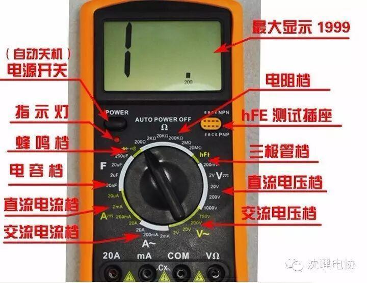
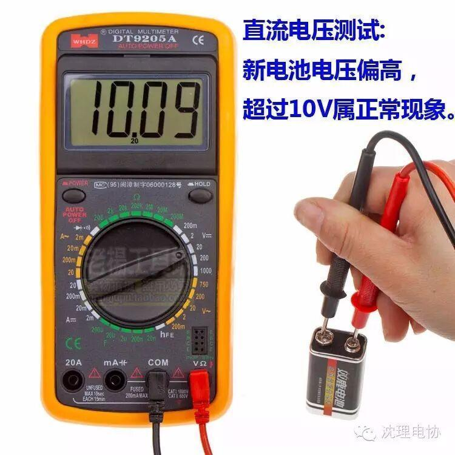
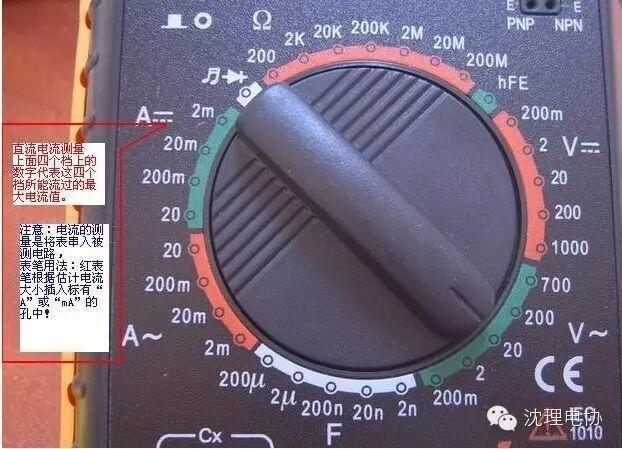
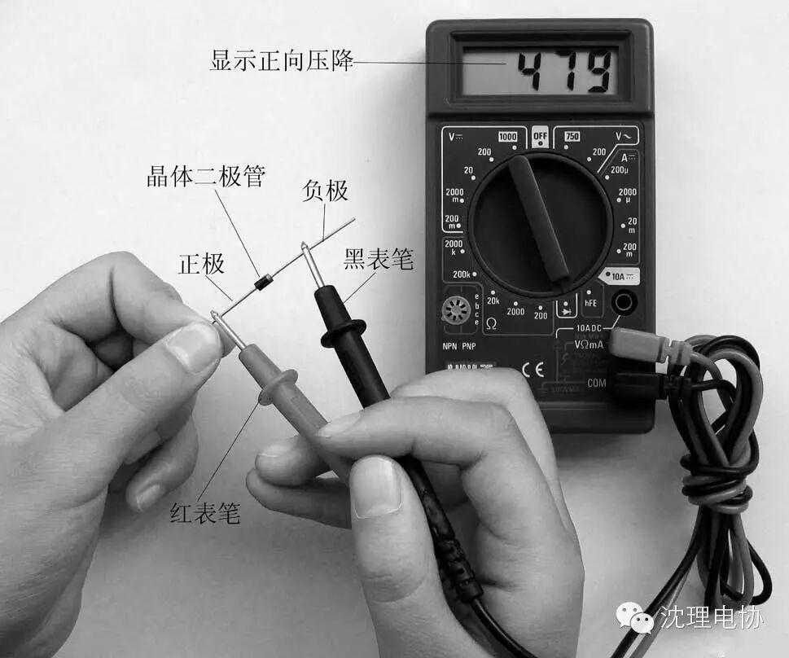

数字万用表相对来说，属于比较简单的测量仪器。本篇，作者就教大家数字万用表的正确使用方法。从数字万用表的电压、电阻、电流、二极管、三极管、MOS场效应管的测量等测量方法开始，让你更好的掌握万用表测量方法。

一、电压的测量
1、直流电压的测量，如电池、随身听电源等。首先将黑表笔插进“com”孔，红表笔插进“V Ω ”。把旋钮选到比估计值大的量程 （注意：表盘上的数值均为最大量程，“V－”表示直流电压档，“V～”表示交流电压档，“A”是电流档），接着把表笔接电源或电池两端；保持接触稳定。数 值可以直接从显示屏上读取，若显示为“1.”，则表明量程太小，那么就要加大量程后再测量工业电器。 如果在数值左边出现“-”，则表明表笔极性与实际电源极性相反，此时红表笔接的是负极。

2、交流电压的测量。表笔插孔与直流电压的测量一样，不过应该将旋钮打到交流档“V～”处所需的量程即可。交流电压无正负之分，测量方法跟前面相同。 无论测交流还是直流电压，都要注意人身安全，不要随便用手触摸表笔的金属部分。
二、电流的测量
1、直流电流的测量。先将黑表笔插入“COM”孔。若测量大于200mA的电流，则要将红表笔插入“10A”插孔并将旋钮打到直流 “10A”档；若测量小于200mA的电流，则将红表笔插入 “200mA”插孔，将旋钮打到直流200mA以内的合适量程。调整好后，就可以测量了。将 万用表串进电路中，保持稳定，即可读数。若显示为“1.”，那么就要加大量程；如果在数值左边出现“-”，则表明电流从黑表笔流进万用表。
交流电流的测量。测量方法与1相同，不过档位应该打到交流档位，电流测量完毕后应将红笔插回“VΩ”孔，若忘记这一步而直接测电压，哈哈！你的表或电 源会在“一缕青烟中上云霄”－－报废！
三、电阻的测量
将表笔插进“COM”和“VΩ”孔中，把旋钮打旋到“Ω”中所需的量程，用表笔接在电阻两端金属部位，测量中可以用手接触电阻，但 不要把手同时接触电阻两端，这样会影响测量精确度的－－人体是电阻很大但是有限大的导体。读数时，要保持表笔和电阻有良好的接触；注意单位：在“200” 档时单位是“Ω”，在“2K”到“200K“档时单位为 “KΩ ”，“2M”以上的单位是“MΩ”。
四、二极管的测量
数字万用表可以测量发光二极管，整流二极管……测量时，表笔位置与电压测量一样，将旋钮旋到“ ”档；用红表笔接二极管的正极，黑表笔接负极，这时会 显示二极管的正向压降。肖特基二极管的压降是0.2V左右，普通硅整流管（1N4000、1N5400系列等）约为0.7V，发光二极管约为 1.8～2.3V。调换表笔，显示屏显示“1.”则为正常，因为二极管的反向电阻很大，否则此管已被击穿。


五、三极管的测量
表笔插位同上；其原理同二极管。先假定Ａ脚为基极，用黑表笔与该脚相接，红表笔与其他两脚分别接触其他两脚；若两次读数均为０.７Ｖ左右，然后再用红 笔接Ａ脚，黑笔接触其他两脚，若均显示"１"，则Ａ脚为基极，否则需要重新测量，且此管为ＰＮＰ管。那么集电极和发射极如何判断呢？数字表不能像指针表那 样利用指针摆幅来判断，那怎么办呢？我们可以利用“hFE”档来判断：先将档位打到“hFE”档，可以看到档位旁有一排小插孔，分为PNP和NPN管的测量。（http://www.diangon.com/ 版权所有）前面已经判断出管型，将基极插入对应管型“b”孔，其余两脚分别插入“c”，“e”孔，此时可以读取数值，即β值；再固定基极，其余两脚对调； 比较两次读数，读数较大的管脚位置与表面“c”，“e”相对应。
小技巧：上法只能直接对如９０００系列的小型管测量，若要测量大管，可以采用接线法，即用小导线将三个管脚引出。这样方便了很多哦。
六、MOS场效应管的测量
Ｎ沟道的有国产的３Ｄ０１，４Ｄ０１，日产的３ＳＫ系列。Ｇ极（栅极）的确定：利用万用表的二极管档。若某脚与其他两脚间的正反压 降均大于２Ｖ，即显示“１”，此脚即为栅极Ｇ。再交换表笔测量其余两脚，压降小的那次中，黑表笔接的是Ｄ极（漏极），红表笔接的是Ｓ极（源极）。
一、电压档：
在检测或制作时，可以用来测量器件的各脚电压，与正常时的电压比较，即可得出是否损坏。还可以用来检测稳压值较小的稳压二极管的稳压值，其原理如 图：Ｒ为１Ｋ，电源端的电压视稳压管的标称稳压值而定，一般比标称电压大３Ｖ以上，但不要超过１５Ｖ。再用万用表检测Ｄ管两端电压值，此值既为Ｄ管实际稳 压值。
二、电流档
将表串入电路中，对电流进行测量和监视，若电流远偏离正常值（凭经验或原有正常参数），必要时可以调整电路或者需要检修。还可以利用该表的20A档测 量电池的短路电流，即将两表笔直接接在电池两端。切记时间绝对不要超过1秒！注意：此方法只适用于干电池，5号，7号充电电池，且初学者要有熟悉维修的人 员指导下进行，切不可自行操作！根据短路电流即可判断电池的性能，在满电的同种电池的情况下，短路电流越大越好。
三、电阻档；
可用于判断电阻，二极管，三极管好坏的方法之一。对于电阻其实际阻值偏离标称值过多时则已损坏。对于二三极管，若任两脚间的电阻都不为很大值（几百K 以上），则可认为性能下降或者已击穿损坏，注意此三极管是不带阻的。此法也可用于集成块，须要说明的是：集成块的测量只能和正常时参数作比较。
四、现在普通万用表的表笔都存在阻值较大，有兴趣的爱好者可自行制作一副表笔；方法：准备一米左右的优质音箱线或者多蕊铜电线，带绝缘套的夹子一对 （红黑色），用于音箱接线的香蕉插一对（红黑色）；线的一端焊牢在夹上，另一端相应接入香蕉插中；一副优良的表笔即大功告成。
关注沈理电协（微信：sylgdzxh）
每一次转发和分享都是对我们的肯定。